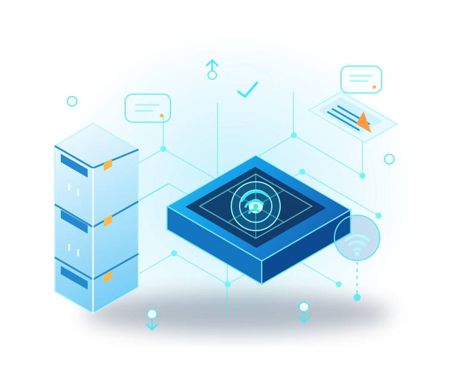

Koneksi Andal untuk Rumah dan Bisnis Anda
PT. Anugerah Signal Abadi menghadirkan layanan internet yang dirancang untuk mendukung aktivitas digital Anda di Sumatera Utara.

Tentang Kami
Mitra konektivitas untuk kebutuhan digital yang terus berkembang
Menghubungkan lebih banyak aktivitas di Sumatera Utara
PT. Anugerah Signal Abadi (ASA) adalah penyedia layanan internet yang berkomitmen menghadirkan koneksi untuk mendukung komunikasi, produktivitas, dan hiburan pelanggan. Kami melayani kebutuhan rumah maupun usaha dengan pendekatan yang mengutamakan keandalan layanan dan dukungan yang responsif.
Kepercayaan lebih dari 230 pelanggan di Sumatera Utara menjadi semangat kami untuk terus meningkatkan kualitas layanan dan memperluas konektivitas.
Informasi Perizinan
ASA memiliki izin penyelenggaraan jasa akses internet (ISP).
Nomor izin:
17072401057720001
Layanan Kami
Internet untuk rumah dan usaha, dengan bantuan yang mudah dihubungi saat Anda membutuhkan.
Internet untuk Rumah
Nikmati internet untuk belajar, bekerja, menonton, dan tetap terhubung dengan keluarga di rumah.
Internet untuk Usaha
Bantu usaha Anda tetap online untuk melayani pelanggan, berkomunikasi, dan menjalankan kegiatan sehari-hari.
Bantuan Pemasangan
Kami membantu memasang dan menyiapkan jaringan internet di lokasi Anda.
Bantuan Pelanggan
Ada pertanyaan atau kendala? Hubungi tim kami, dan kami akan membantu mencari solusinya.
Internet untuk Kebutuhan Sehari-hari
Kenali layanan ASA dan langkah sederhana sebelum memasang internet.
Internet untuk rumah
Koneksi internet di rumah membantu berbagai kegiatan, seperti belajar, bekerja, berkomunikasi dengan keluarga, dan menikmati hiburan. Kebutuhan tiap rumah tidak selalu sama. Jumlah orang yang memakai internet, banyaknya perangkat, dan kegiatan yang dilakukan pada waktu bersamaan dapat memengaruhi pengalaman penggunaan.
Sebelum memilih layanan, pikirkan kegiatan yang paling sering dilakukan di rumah. Sampaikan kebutuhan tersebut kepada tim ASA agar Anda mendapat penjelasan yang sesuai. Jika belum yakin apakah jaringan tersedia di lingkungan Anda, berikan alamat pemasangan secara lengkap untuk diperiksa terlebih dahulu.
Internet untuk usaha
Bagi usaha, koneksi internet dapat digunakan untuk berkomunikasi dengan pelanggan, mengelola pesanan, memperbarui informasi, serta menjalankan pekerjaan harian. Kebutuhan setiap tempat usaha berbeda, bergantung pada jumlah pengguna dan aplikasi yang dipakai. Ceritakan cara internet digunakan di tempat Anda supaya tim kami memahami kebutuhan dasarnya.
ASA melayani konsultasi koneksi untuk rumah maupun usaha. Kami akan membantu menjelaskan informasi layanan yang tersedia berdasarkan alamat dan kebutuhan yang Anda sampaikan. Rincian layanan, biaya, dan ketersediaan sebaiknya dikonfirmasi langsung sebelum pemasangan agar Anda dapat membuat keputusan dengan informasi yang jelas.
Cek jangkauan sebelum memesan
Jangkauan jaringan tidak selalu sama di setiap jalan atau lingkungan. Karena itu, jangan berasumsi layanan sudah tersedia hanya karena berada di kota yang sama. Hubungi ASA melalui WhatsApp atau email, lalu kirimkan alamat lengkap beserta patokan lokasi yang mudah dikenali. Tim kami akan membantu memeriksa apakah pemasangan dapat dilayani di alamat tersebut.
Pemeriksaan awal ini juga menjadi kesempatan untuk bertanya tentang kebutuhan internet, proses pemasangan, dan informasi layanan. Jika jaringan belum tersedia, Anda dapat meminta penjelasan mengenai kemungkinan langkah berikutnya. Keputusan pemasangan dilakukan setelah ketersediaan dan ketentuan layanan dikonfirmasi.
Proses pemasangan yang jelas
Langkah pertama adalah menghubungi tim ASA dan menyampaikan alamat serta kebutuhan penggunaan internet. Setelah jangkauan diperiksa, tim kami akan memberikan informasi tentang layanan yang dapat dipilih dan hal-hal yang perlu disiapkan. Anda dapat bertanya sebelum menyetujui pemasangan, termasuk mengenai biaya dan jadwal yang berlaku.
Jika semua informasi sudah sesuai, tim akan menjelaskan tahapan selanjutnya. Petugas pemasangan akan membantu menyiapkan koneksi di lokasi sesuai kondisi jaringan. Lama proses dan kebutuhan instalasi dapat berbeda antara satu alamat dengan alamat lainnya; tim kami akan menjelaskan informasi yang relevan untuk lokasi Anda.
Bantuan saat Anda membutuhkan
Jika memiliki pertanyaan tentang layanan atau mengalami kendala koneksi, hubungi tim ASA melalui nomor WhatsApp atau alamat email yang tercantum di halaman ini. Sertakan nama pelanggan dan alamat pemasangan agar kami dapat memahami konteks pertanyaan dengan lebih baik. Jelaskan juga kapan kendala mulai terjadi dan perangkat apa saja yang terdampak.
Informasi yang lengkap membantu tim menelusuri masalah dan memberikan arahan yang sesuai. Penanganan dapat bergantung pada jenis kendala dan kondisi jaringan di lokasi. Tim kami akan menyampaikan langkah pemeriksaan berikutnya, termasuk apabila diperlukan pengecekan lebih lanjut.
Melayani pelanggan di Sumatera Utara
PT. Anugerah Signal Abadi (ASA) berkantor di Medan dan melayani pelanggan di Sumatera Utara sesuai jangkauan jaringan yang tersedia. Kepercayaan lebih dari 230 pelanggan menjadi bagian dari perjalanan kami dalam menyediakan koneksi internet untuk rumah dan usaha. Kami terus berupaya memberikan informasi yang mudah dipahami sejak pertanyaan pertama hingga layanan digunakan.
Alamat kantor kami berada di Jl. Karya Gg. Maruto No.33, Karang Berombak, Kecamatan Medan Barat, Kota Medan, Sumatera Utara 20115. Silakan hubungi kami untuk memeriksa jangkauan, bertanya tentang layanan, atau menyampaikan kebutuhan pemasangan. Tim ASA akan membantu memberikan informasi berdasarkan lokasi Anda.
Paket
Paket 30 MBPS
Rp150K / bulan
- Rp 150.000 per bulan, ideal untuk penggunaan dasar seperti browsing, gaming dan streaming ringan dengan kecepatan internet hingga 30 Mbps
Punya Pertanyaan?
Temukan informasi seputar layanan internet ASA. Tim kami juga siap membantu jika Anda memerlukan penjelasan lebih lanjut.
Q: Layanan apa yang tersedia dari ASA?
A: ASA menyediakan layanan internet untuk kebutuhan rumah dan usaha, termasuk konsultasi kebutuhan koneksi, pemasangan, serta dukungan pelanggan.
Q: Apakah layanan ASA dapat digunakan di alamat saya?
A: Ketersediaan jaringan bergantung pada lokasi. Silakan hubungi tim ASA dengan alamat pemasangan agar kami dapat membantu memeriksa jangkauan layanan.
Q: Bagaimana cara mengajukan pemasangan internet?
A: Hubungi kami melalui WhatsApp atau email. Tim kami akan menanyakan kebutuhan dan lokasi Anda, lalu menjelaskan tahapan selanjutnya.
Q: Apakah ASA melayani kebutuhan internet untuk usaha?
A: Ya. Kami menerima konsultasi konektivitas untuk kebutuhan usaha. Silakan sampaikan kebutuhan operasional dan lokasi agar tim kami dapat memberikan informasi yang sesuai.
Lokasi & Hubungi Kami
Kunjungi kantor kami di Medan atau hubungi tim ASA untuk informasi layanan.
Alamat
ANUGERAH SIGNAL ABADI (ISP)
Jl. Karya Gg. Maruto No.33, Karang Berombak, Kec. Medan Bar., Kota Medan, Sumatera Utara 20115